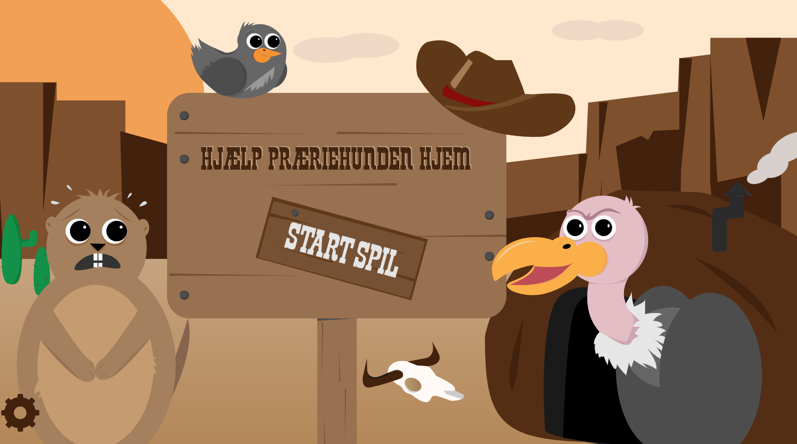
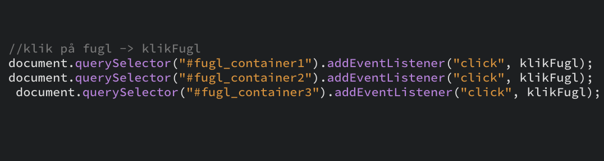

Grundlæggende
Animation
Beskrivelse
Grundlæggende Animation var et forløb på 5 uger, hvor vi kom igennem programmeringssproget javascript og lærte at lave interaktive elementer.
Her arbejdede vi selvstændigt og måtte selv bestemme konceptet.
Idé
Mindmap
Jeg startede ud med at idéudvikle mit spil – jeg var hurtigt klar over at jeg ville kaste mig ud i et western tema, så det er hovedpunktet i mit mindmap. Jeg noterede idéer til figurer og elementer til mit spil, nogle af tingene blev ændret undervejs i processen.

Spil beskrivelse
Mit spil handler om en præriehund der er på vej hjem til sin hule, man skal undervejs beskytte ham for de sultne gribbe, men passe på at man ikke ramme de uskyldige fugle som blot flyver forbi.
Moodboard
Jeg ledte efter inspiration på nettet, til hvilken stil jeg kunne tænke mig i mit spil. Her er der lidt forskellige forslag, f.eks. mørk- eller lys stemning.

Skitser
Jeg startede ud med at skitsere mine idéer ned. De fleste af dem tog jeg også udgangspunkt i, til mit endelige spil.

Titelskærm
Skærm når man taber

Illustrator
Figurer
Ved begge fugle har jeg lavet 2 versioner, én der står, som kan bruges til f.eks. titelskærm, og en der flyver som bruges i selve spillet.
Spilskærme eksempler

UI elementer
SVG
Da alle mine elementer skal være vector baseret, har jeg skulle bruge SVG billede format, som er et web baseret vector format.
For at sikre mig at alt er i vector, f.eks. tekst, har jeg brugt funktionen "Create Outline" i Illustrator.
Planlægning
Aktivitets diagram

State machine diagram
Vi lærte her, at inden man kaster sig ud i javascript, er det en rigtig god idé at lave et state machine diagram – det hjælper med at give et overblik over hvordan ens functions skal sættes op.

Opbygning af spil
CSS Animation
Vi lærte hvordan man kan lave animationer via css. Her et eksempl som fortæller at mine fugle skal flyve 5vw fra deres position, til en ny postion på x og y aksen.
Animation & keyframes
Alle mine elementer i spillet er position: absolute. Det gør det muligt at bevæge mine elementer forhold til min #screen, som er relative.
Position
Javascript
Her fik vi vores første introduktion til javascript. Jeg lærte f.eks. om classList, EventListener, this og meget mere.
classList
EventListener "click"
EventListener
"animation slut"
if & else
Eksempel på en function
Lyd
Vi fik til opgave selv at skulle indspille lyd til vores spil. Vi fik grundlæggende undervisning i Adobe Audition.
Jeg valgte at optage mig selv, og ændre min stemme i Audition. Med effekten "Stretch and Pitch" kan man gøre sin stemme lysere og mørkere, så den passer til ens figurer.
Test
Google Analyse
Jeg oprettede en formular på google, hvor medstuderende kunne komme med deres syn på mit spil. Jeg fik nogle rigtig gode inputs, som jeg valgte at bruge.
Ændringer
Jeg fik feedback om, at spillet kunne blive lidt sjovere hvis mine gribbe fløj mere direkte mod præriehunde, så det ændrede jeg.
Før
Efter
Jeg fik også at vide, at vedkommende ikke syntes min infoskærm passede ind, og forslog at jeg lavede den om til en wanted poster – det forslag fulgte jeg også.